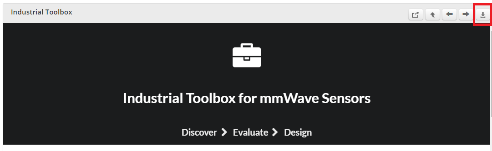
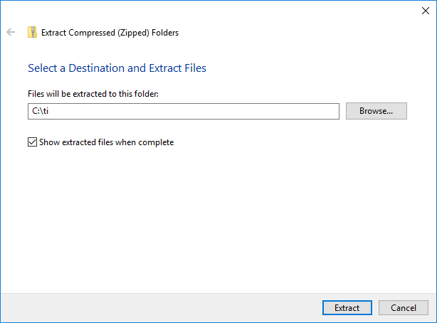
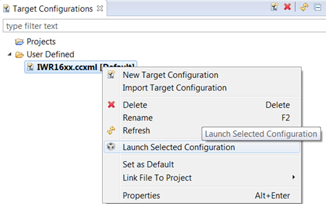
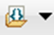

Overview
===========
This lab demonstrates how TI single-chip millimeter-wave (mmWave) technology can be used for robust, long-range sensing in traffic monitoring and other applications.
The advanced tracking feature in the lab enables multivehicle tracking across multiple lanes. The reference design uses the IWR1642BOOST evaluation module (EVM) and integrates a complete radar processing chain onto the IWR1642 device.
The processing chain includes the analog radar configuration, analog-to-digital converter (ADC) capture, low-level FFT processing, and high-level clustering and tracking algorithms.
<img src="images/tm_intro.gif" width="600"/>
Quickstart
===========
The quickstart uses:
* Precompiled binaries for flashing the device using Uniflash
* Visualizer as .exe
1. Hardware and Software Requirements
-----------
### Hardware
Item | Details
--------------------------|-----------------
Device | [xWR1642 EVM](http://www.ti.com/tool/IWR1642BOOST)
Computer | PC with Windows 7 or 10. If a laptop is used, please use the 'High Performance' power plan in Windows.
Micro USB Cable |
Power Supply | 5V, >2.5A with 2.1-mm barrel jack (center positive). The power supply can be wall adapter style or a battery pack with a USB to barrel jack cable.
### Software
Tool | Version | Required For |Details
----------------------------|---------------------------|---------------|--
mmWave Industrial Toolbox | Latest | - | Contains all files (quickstart, visualizer and firmware source files) related to the lab
MATLAB Runtime | 2017a (9.2) | Quickstart Visualizer | To run the quickstart visualizer the [runtime](https://www.mathworks.com/products/compiler/matlab-runtime.html) is sufficient.
Uniflash | Latest | Quickstart Firmware | [Download offline tool](http://www.ti.com/tool/UNIFLASH) or use [cloud version](https://dev.ti.com/uniflash/#!/)
[[+d Expand for mmWave Industrial Toolbox installation without Code Composer Studio
1. Navigate to the [TI Resource Explorer](http://dev.ti.com/tirex/#/?link=Software%2FmmWave%20Sensors%2FIndustrial%20Toolbox)
2. Click the download button. A .zip file will be downloaded.

3. Navigate to the .zip file. Right click and then select **Extract All...**. Do NOT use the default path. The path must be `C:\ti`.

4. Verify installation by navigating to view the lab files at `C:\ti\<mmwave_industrial_toolbox_install_dir>\labs\lab0013-traffic-monitoring-16xx`
+]]
[[+d Expand for mmWave Industrial Toolbox installation using Code Composer Studio
1. Open CCS
2. In the top toolbar, navigate to **View > Resource Explorer**
3. In the **Resource Explorer** side panel (not the main panel with "Welcome to.."), navigate to Industrial Toolbox at **Software > mmWave Sensors > Industrial Toolbox - <ver>**
4. With Industrial Toolbox selected, the main panel should show the Industrial toolbox landing page. Click on the **Download icon** in the right corner of panel.
5. Verify installation by navigating to view the lab files at `C:\ti\<mmwave_industrial_toolbox_install_dir>\labs\lab0013-traffic-monitoring-16xx`
* +]]
2. Flash the EVM
-----------
* Power on the EVM using a 5V/2.5A power supply.
* Flash the following image using **Uniflash**
Image | Location
--------------------------|------------
Meta Image 1/RadarSS | `C:\ti\<mmwave_industrial_toolbox_install_dir>\labs\lab0013-traffic-monitoring-16xx\precompiled_binaries\iwr16xx_traffic_monitoring_lab.bin`
[[+d Expand for help using Uniflash
* Connect the EVM to your PC and check the COM ports in **Windows Device Manager**
* The EVM exports two virtual COM ports as shown below:
* XDS110 Class Application/User UART (COM UART): Used for passing configuration data and firmware to the EVM
* XDS110 Class Auxiliary Data Port (COM AUX): Used to send processed radar data output
<img src="images/com_port.png" width="300"/>
{{b Note the COM UART and COM AUX port numbers, as they will be used later for flashing and running the lab.}}
* Put the EVM in flashing mode by connecting jumpers on **SOP0** and **SOP2** as shown in the image. Then power cycle the EVM with **SW2**.
* Open the **UniFlash tool** ([Download offline tool](http://www.ti.com/tool/UNIFLASH) or use [cloud version](https://dev.ti.com/uniflash/#!/) )
* In the New Configuration section, locate and select the appropriate device (AWR1642 or IWR1642)
* Click Start to proceed
* Click the **Settings & Utilities** tab. Under setup, fill the **COM Port** text box with the Application/User UART COM port number (COM UART) noted earlier.
* In the **Program** tab, browse and locate the images (.bin file) as specified in the lab directions.
<img src="images/uniflash.png" width="600"/>
* **Power cycle** the device and click on **Load Images**
[[g! Successful Flash Procedure
UniFlash’s console should indicate: [SUCCESS] Program Load completed successfully
]]
* Power off the board and **remove only SOP2 jumper**
[[y SOP2 Removed?
Ensure that the jumper has been removed and the EVM power cycled. This puts the board back in functional mode.
]]
+]]
3. Run the Lab
-----------
To run the lab, launch and configure the visualizer which displays the detection and tracked object data received via UART.
### 1. Launch the visualizer:
* Navigate to `<mmwave_industrial_toolbox_install_dir>\labs\lab0013-traffic-monitoring-16xx\gui\tm_demo.exe`
* Run `tm_demo.exe`
* After 30-60sec, the setup window should appear
In the setup window, the left side has options and parameters that need to be modified.
The scene preview figure will update as the options and parameters are changed.
### 2. Configure Visualizer
#### 1. Select COM Ports
* Specify **UART** and **DATA** COM ports
* Click **Connect** button.
[[g! COM Status
Message should update to show that the COM ports have been connected before continuing.
]]
#### 2. Select Config File
* IMPORTANT: For best performance, calibration should be performed and the **mmw_tm_demo_ph2.cfg** file should be modified as described in the "Range Bias and Rx Channel Gain/Offset Measurement and
Compensation" section of the mmWave SDK documentation for the xwr16xx Out of Box Demo. Save the cfg file to save the calibration parameters.
* This documentation can be found by navigating to `<mmwave_sdk_install_dir>\packages\ti\demo\xwr16xx\mmw\docs\doxygen\html\index.html`
* The calibration procedure and cfg modification only need to be done once.
* By default, the provided cfg file does not enable calibration since this is device specific.
* To load cfg, Click **Browse Files** and navigate to user's custom cfg file or the default provided **mmw_tm_demo_ph2.cfg** in `<mmwave_industrial_toolbox_install_dir>\labs\lab0013-traffic-monitoring-16xx\chirp_configs`
* Once the cfg has been loaded, the chirp parameter table is populated, if the cfg file included advanced gtrack parameter commands the appropriate tables are also populated.
* THe Scene Preview is updated to reflect the parameters.
#### OPTIONAL: Advanced Gtrack Parameters
* This section exposes some of the advanced gtrack parameters that are commonly modified for a user's use case and environment.
* For a detailed explanation of the meaning of the parameters, refer to the [TI Design document](http://www.ti.com/lit/ug/tidud31a/tidud31a.pdf) or
the document **Tracking radar targets with multiple reflection points** located at `<mmwave_industrial_toolbox_install_dir>\labs\lab0013-traffic-monitoring-16xx\src\mss\gtrack\docs`
* The values of the gtrack parameters can be specified by the command lines in the CFG file or overriden and the values entered in the tables can be used instead. To enable the override, check the checkbox.
If the values in the tables are changed without enabling the override, the visualization in Scene Preview will be modified but the gtrack algorithm behavior will not be modified.
#### 3. Scene Geometry
These parameters are to be modified to enable realistic visualization of the scene. They do not affect any processing or algorithm behaviors.
* A) Number of traffic lanes
* B) Lane Width: The number of elements must match the number of traffic lanes. The values represent width in meters and do not have to be identical.
* C) Left lane [m] along x-axis: This specifies the x-axis coordinate of the left most traffic lane. All other lanes are appended towards the right.
* D) Stop bar [m] along y-axis: This specifies the y-axis coordinate of the stop bar.
* E) Start of lane counter: This specifies the y-axis at which to begin counting cars in the scene. Cars between the stop bar and start of lane counter are counted.
**Azimuth Angle**
* This refers to the azimuth tilt of the radar. This parameter is signed use a **+** to indicate angled toward the right and **-** for toward the left. If the EVM is pointed straight down the lanes then the angle would be 0.
* The azimuth angle is specified in the last parameter of the trackingCfg command in the cfg file. However, if there is a discrepency between the value provided in the cfg file and the value specified in the GUI the GUI value will override and take affect.
* If the angle is not specified correctly. Objects will appear to be moving skewed at an incorrect angle relative to actual track.
#### 4. Plotting Area
* F) [Xmin, Xmax]: Refer to the x-axis limits of the plot. Use to zoom in or out of the scene.
( G) [Ymin, Ymax]: Refer to the y-axis limits of the plot. Use to zoom in or out of the scene.
#### 5. Select folder to save data to
Specify the path to save the data that is being visualized. The files each represent 1000 frames of data.
Files continue to be created and saved as the visualizer is left running.
### 3. Launch Visualizer
* Click **Start** to launch visualizer with configurations specified.
* An example setup figure is included below:
6. Understanding the Output
-----------
The visualizer consists of:
* 1st plot panel (left) with a **Point Cloud** plot.
* The black points represent the point cloud returned by the detection layer of the device.
* Each new tracked object is assigned one of five possible colors (blue, red, green, cyan, and magenta).
* The small colored ring represents the computed centroid of the point cloud for the tracked object.
* The "snail trail" trace represent 100 frames of history of the tracked object's centroid.
* 2nd plot panel (right) with a **Gating and Association** plot.
* This plot visualizes the result of the tracking algorithm.
* The bubble is centered over the centroid of of the tracked object.
* A side panel with Statistics and Visualizer Options
* The video stream of the vehicles are superimposed for illustrative purposes and is not a provided feature.
**Quitting the Visualizer** :
To exit the visualizer use the exit button at the bottom left of the window. This will delete the open serial ports and finish saving.
Developer's Guide
===========
Build the Firmware from Source Code
-----------
### 1. Software Requirements
Tool | Version | Required For |Details
----------------------------|---------------------------|---------------|--
mmWave Industrial Toolbox | Latest | - | Contains all files (quickstart, visualizer and firmware source files) related to the lab
TI mmWave SDK | 1.01.00.02 | Firmware Source Code | SDK Version 1.01.00.02 MUST be used. Any other version will not work. The specific version can be downloaded here: [TI mmWave SDK 1.01.00.02](http://software-dl.ti.com/ra-processors/esd/MMWAVE-SDK/01_01_00_02/index_FDS.html) and all the related tools are required to be installed as specified in the mmWave SDK [release notes](http://software-dl.ti.com/ra-processors/esd/MMWAVE-SDK/01_01_00_02/exports/mmwave_sdk_release_notes.pdf)
Code Composer Studio | 7.2+ | Firmware Source Code | [Download link](http://processors.wiki.ti.com/index.php/Download_CCS#Code_Composer_Studio_Version_7_Downloads) Note: CCSv6.x cannot be used
C6000 Code Generation Tool| 7.4.16 | Firmware Source Code | To compile code for the DSP core(C674x), the version 7.4.16 compiler must be installed under C:\ti. [Download link](http://software-dl.ti.com/dsps/forms/self_cert_export.html?prod_no=ti_cgt_c6000_7.4.16_windows_installer.exe&ref_url=http://software-dl.ti.com/codegen/esd/cgt_registered_sw/C6000/7.4.16PC)
{{y The Traffic Monitoring Demo requires mmWave SDK version 1.01.00.02. Other versions will currently not work. Ensure that the specific verision has been installed.}}
To verify proper installations, navigate to **`C:\ti`** and ensure that the following tools have been installed in the *EXACT* directory specified.
Tool | Version | Folder Path | Download link & Details
----------------|-------------|----------------------------------|----------------
CCS | 7.2 or later| `C:\ti\ccsv7` | [Download link](http://processors.wiki.ti.com/index.php/Download_CCS#Code_Composer_Studio_Version_7_Downloads) Note: CCSv6.x cannot be used
TI SYS/BIOS | 6.52.00.12 | `C:\ti\bios_6_52_00_12` | Included in mmwave sdk installer
TI ARM compiler | 16.9.1.LTS | `C:\ti\ti-cgt-arm_16.9.1.LTS` | Included in mmwave sdk installer
TI CGT compiler | 7.4.16 | `C:\ti\c6000_7.4.16` | Version 7.4.16 must be downloaded and installed. [Download link](http://software-dl.ti.com/dsps/forms/self_cert_export.html?prod_no=ti_cgt_c6000_7.4.16_windows_installer.exe&ref_url=http://software-dl.ti.com/codegen/esd/cgt_registered_sw/C6000/7.4.16PC)
XDC | 3.50.00.10 | `C:\ti\xdctools_3_50_00_10_core` | Included in mmwave sdk installer
C64x+ DSPLIB | 3.4.0.0 | `C:\ti\dsplib_c64Px_3_4_0_0` | Included in mmwave sdk installer
C674x DSPLIB | 3.4.0.0 | `C:\ti\dsplib_c674x_3_4_0_0` | Included in mmwave sdk installer
C674x MATHLIB | 3.1.2.1 | `C:\ti\mathlib_c674x_3_1_2_1` | Included in mmwave sdk installer
mmWave device support packages | 1.5.3 or later | - | Upgrade to the latest using CCS update process (see SDK user guide for more details)
TI Emulators package | 6.0.0576.0 or later | - | Upgrade to the latest using CCS update process (see SDK user guide for more details)
### 2. Import Lab Project
For the Traffic Monitoring lab, there are two projects, the DSS for the C674x DSP core and the MSS project for the R4F core, that need to be imported to CCS and compiled to generate firmware for the xWR1642.
* Start CCS and setup workspace as desired.
* Import the projects below to CCS using either TI Resource Explorer in CCS or CCS Import Projectspecs method:
* **traffic_monitoring_16xx_dss**
* **traffic_monitoring_16xx_mss**
[[+d Expand for details on importing via TI Resource Explorer in CCS
* In the top toolbar, navigate to **View > Resource Explorer**
* In the **Resource Explorer** side panel (not the main panel with "Welcome to.."), navigate to **Software > mmWave Sensors > Industrial Toolbox - <ver> > Labs > Traffic Monitoring - 16xx**
* Under the expanded **Traffic Monitoring - 16xx** folder, there should be two CCS projects, **CCS Project - DSS** and **CCS Project - MSS**.
* For each of the two projects: Click on the project, which should open the project in the right main panel, and then click on the Import to IDE button <img src="images/import_ide_icon.png" width="40"/>.
+]]
[[+d Expand for details on importing via CCS Import Projectspecs
* In the top toolbar, navigate to **Project > Import CCS Projects...**
* With the **Select search-directory** option enabled, click **Browse...**, navigate to the **lab0013-traffic-monitoring-16xx** folder at `C:\ti\<mmwave_industrial_toolbox_install_dir>\labs\lab0013-traffic-monitoring-16xx`, and then click **OK**.
* Under **Discovered projects**, select **traffic_monitoring_16xx_dss** and **traffic_monitoring_16xx_mss** (ignore any other projects), then click **Finish**.
+]]
[[g! Successful Import to IDE
After using either method, both project should be visible in **CCS Project Explorer**
<img src="images/tm_pjt_impt.png" width="300"/>
]]
[[b! Project Workspace
When importing projects to a workspace, a copy is created in the workspace. All modifications will only be implemented for the workspace copy. The original project downloaded in mmWave Industrial Toolbox is not touched.
]]
### 3. Build the Lab
#### **Build DSS Project**
The DSS project must be built before the MSS project.
{{y The DSS project must be built using compiler version 7.4.16.
To check the build settings, select **traffic_monitoring_16xx_dss** and right click on the project to select **Show build settings...**.
Under the **General** tab, the **Advanced Settings** section has a drop down menu for **Compiler Version**.
Ensure that it reads **TI v7.4.16**.}}
With the **traffic_monitoring_16xx_dss** project selected in **Project Explorer**, right click on the project and select **Rebuild Project**. Selecting **Rebuild** instead of **Build** ensures that the project is always re-compiled. This is especially important in case the previous build failed with errors.
[[g! Successful DSS Project Build
In the **Project Explorer** panel, navigate to and expand **traffic_monitoring_16xx_dss > Debug** directory. The project has been successfully built if the following files appear in the **Debug** folder:
* xwr16xx_traffic_monitoring_dss.bin
* xwr16xx_traffic_monitoring_dss.xe674
]]
#### **Build MSS Project**
After the DSS project is successfully built, select **traffic_monitoring_16xx_mss** in **Project Explorer**, right click on the project and select **Rebuild Project**.
[[g! Successful MSS Project Build
In the **Project Explorer** panel, navigate to and expand **traffic_monitoring_16xx_mss > Debug** directory. The project has been successfully built if the following files appear in the **Debug** folder:
* xwr16xx_traffic_monitoring_mss.bin
* xwr16xx_traffic_monitoring_mss.xer4f
* xwr16xx_traffic_monitoring_lab.bin
]]
[[r! Build Fails with Errors
If the build fails with errors, please ensure that all the [prerequisites](#software) are installed as mentioned in the mmWave SDK release notes.
]]
### 4. Execute the Lab
There are two ways to execute the compiled code on the EVM:
* Deployment mode: the EVM boots autonomously from flash and starts running the bin image
* Using Uniflash, flash the **xwr16xx_traffic_monitoring_lab.bin** found at `<PROJECT_WORKSPACE_DIR>\traffic_monitoring_16xx_mss\Debug\xwr16xx_traffic_monitoring_lab.bin`
* The same procedure for flashing can be use as detailed in the Quickstart [Flash the Device](#1-flash-the-device) section.
* Debug mode: enables connection with CCS while lab is running; useful during development and debugging
[[+d Expand for help with Debug mode:
The CCS debug firmware (provided with the mmWave SDK) needs to be flashed once on the EVM.
* CCS Debug method is enabled by flashing the CCS Debug Firmware (provided with the mmWave SDK) using the methods covered in the Quickstart [Flash the Device](#1-flash-the-device) section.
* Use the following image instead
Image | Location | Comment
--------------------------|----------------------------|------------------------
Meta Image 1/RadarSS | `C:\ti\mmwave_sdk_<ver>\packages\ti\utils\ccsdebug\xwr16xx_ccsdebug.bin` | Provided with the mmWave SDK
After the CCS debug firmware has been flashed, connect the EVM to CCS
* Create a target configuration (skip to "Open the target..." if config already created previously in another lab for xwr16xx)
* Go to **File > New > New Target Configuration File**
* Specify an appropriate file name (ex: IWR16xx.ccxml) and check "**Use shared location**". Click **Finish**.
* In the configuration editor window:
* Select **Texas Instruments XDS110 USB Debug Probe** for Connection
* Select **AWR1642** or **IWR1642** device as appropriate in the Board or Device text box.
* Press the **Save** button to save the target configuration.
* [Optional]: Press the **Test Connection** button to check the connection with the board.
* Open the target configuration window by going to **View > Target Configurations**.
* Under **User Defined** configurations the target configuration previously created should appear.
* Right click on the target configuration and select **Launch Select Configuration**. The target configuration will launch in the **Debug Window**.

* Group cores and connect
* Select both the **Texas Instruments XDS110 USB Debug probe/C674X_0** and **Texas Instruments XDS110 USB Debug probe/Cortex_R4_0** and then right click and select **Group core(s)**
* Select **Group 1** and then right click and select **Connect Target**
* Load the binary
* Once both targets are connected, click on the C674X_0 target and then click **Load** button in the toolbar. 
<img src="images/load_program.png" width="500"/>
* In the **Load Program** dialog, press the **Browse Project** button .
* Select **xwr16xx_traffic_monitoring_dss.xe674** found at `<PROJECT_WORKSPACE_DIR>\traffic_monitoring_16xx_dss\Debug\xwr16xx_traffic_monitoring_dss.xe674` and press **Ok**.
* Press **Ok** again in the **Load Program** dialog.
* Repeat the above Load the Binary process for the Cortex_R4_0 target, selecting instead **xwr16xx_traffic_monitoring_mss.xer4f** found at `<PROJECT_WORKSPACE_DIR>\traffic_monitoring_16xx_mss\Debug\xwr16xx_traffic_monitoring_mss.xer4f`
<img src="images/load_program2.png" width="500"/>
* Run the binary
* Select **Group 1**, press the **Run/Resume** button
* The program should start executing and generate console output.
+]]
After executing the lab using either method, the lab can be visualized using the [Quick Start GUI](#2-run-the-lab-visualizer) or continue to working with the [GUI Source Code](#getting-started-with-gui-source-files)
Visualizer Source Code
-----------
{{y Working with and running the Visualizer source files requires a MATLAB License not just the MATLAB Runtime Engine}}
Source files are located at `C:\ti\mmwave_industrial_toolbox_<VER>\labs\lab0013-traffic-monitoring-16xx\gui`.
Need More Help?
===========
* Find more details about Traffic Monitorign by referring to the [TI Design document](http://www.ti.com/tool/TIDEP-0090)
* Find answers to common questions on [mmWave E2E FAQ](https://e2e.ti.com/support/sensor/mmwave_sensors/w/wiki)
* Search for your issue or post a new question on the [mmWave E2E forum](https://e2e.ti.com/support/sensor/mmwave_sensors/f/1023)